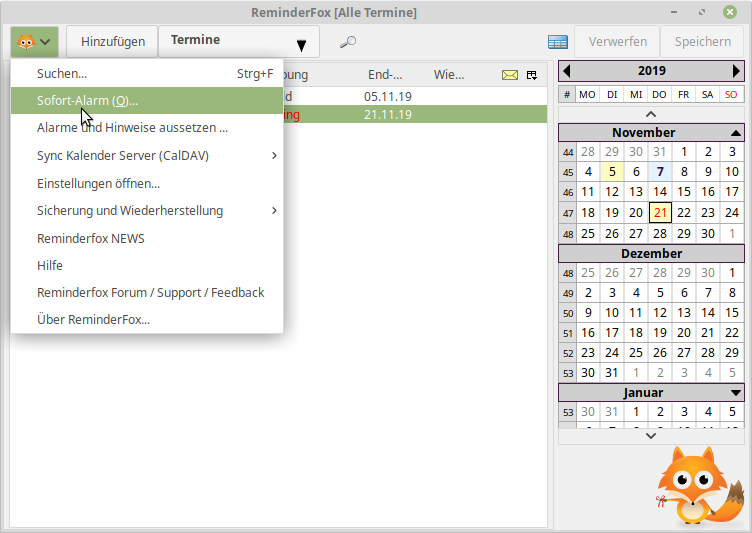
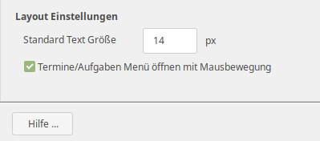

Mit dem ReminderFox Aufruf wird der 'Hauptdialog' geöffnet mit:
-- der Listendarstellung der Termine/Aufgaben
-- dem Kalendarbereich mit Monatsübersichten
-- der Hauptmenüleiste für weitere Bedienung.
Der Hauptdialog von ReminderFox bietet drei Layouts:
Beim Öffnen des ReminderFox Dialogs wird das zuletzt benutzte Layout verwendet. Das einzelne Layout wird mit dem Foxy Symbol auf der Menüleiste oben links gewählt (Einzelheiten sind unten beschrieben).
Die beiden Layouts "Liste und Kalender" und "Liste alleine" sind sehr ähnlich den bisherigen ReminderFox Versionen.
Der "Kalender" unterscheidet sich von den bisherigen Versionen, er kann jetzt mehrere Monate anzeigen.
Hinweise:
-- Die Textgröße lässt für die Bereiche "Liste" und "Kalender" individuell einstellen
-- Tastenbefehle stehen für verschiedene Funktionen zur Verfügung
Die Hauptmenüleiste bietet die wesentlichen Zugriffsmöglichkeiten für alle Layouts:

Das Hauptmenü für das schmale Layout "Kalender":

Für die Darstellung der Liste -- typischerweise mit einem breiteren Layout -- haben die Schaltflächen des HauptMenüs Beschriftung.
Die Bedienelemente des Menüs sind:
Alternative können die die Schaltflächen [Hinzufügen] und [Fertig] am unteren Rand des Dialoges eingeschaltet werden.

Diese Layouteinstellung wird aktiviert über die ReminderFox Einstellungen auf dem dritten Tabulator "Hauptdialog":

|  | Das Foxy Symbol öffnet ein weiteres Menü mit:
|
 |
Die Schaltfläche [Termine] öffnet ein Menü mit allen Listen (Termine, Aufgaben, Benutzerlisten) -- dies ersetzt die Tabulatoren der bisherigen ReminderFox Version Nach der Auswahl der erforderlichen Liste wird der Titel der Schaltfläche entsprechend geändert. |
 |
Der letzte Menüpunkt gestattet den direkten Aufruf der "Einstellungen .." mit dem Tabulator "Listen". So kann die Verwaltung der Listen einfach aufgerufen werden. |
| Die Schaltfläche [Vergrößerungsglas] zeigt/verbirgt die Box [Textsuche / Filter/Ansichten]. |
| Mit dem Layout "Liste / Kalender" wird die Box (Textsuche / Filter/Ansichten) neben dem Vergrößerungsglas angezeigt, in dem Layout "Kalender" in einer zusätzlichen Zeile unter den anderen Menüelementen: | |
 |
|
| [Textsuche / Filter/Ansichten] hat zwei hilfreiche Such- und Filter Funktionen:
Die linke Text Box dient zur Suche von Ereignissen mit Hilfe einer Texteingabe. Die Suche basiert auf den Attributen der Termine/Aufgaben: Beschreibung, Kategorie, Notiz, Ort, bzw es kann in all diesen Bereichen gesucht werden. Die Suche beginnt mit Eingabe eines Zeichens und wird mit jedem weiteren verfeinert. Die Liste wird direkt gemäß des Suchergebnisses angezeigt. Die Kopfbereich für das gewählte Attribute wird blau/fett dargestellt, um auf den Suchbereich aufmerksam zu machen. Außerdem ändert sich die Darstellung des Vergrößerungsglases und es hat in seinem Tooltext das Suchattribute und den Suchbegriff, zB: "[Beschreibung] Textsuche für: test" Die Suche wird mit dem blauen [X] gelöscht bzw durch Auswahl eines anderen Attributes. Der rechte Bereich von [Textsuche / Filter/Ansichten] hat zwei Teile: mit den ersten 7 Menüpunkten wird eine Auswahl für alle Ereignisse in einem bestimmten Zeitbereich gewählt (Alle Ereignisse, ausgewählter Monat, Woche oder Tag, nächste Woche oder alle kommenden Ereignisse). Der zweite Teil des Menüs bietet eine flexible, konfigurierbare Möglichkeit -- die sogenannten "Ansichten". Dies selektiert/filtert die Ereignisse, die in der Liste und im Kalender dargestellt werden sollen. Standardmäßig sind einige Definitionen vorhanden. Zusätzlich können über einen "Ansichteneditor" neue Definitionen hinzugefügt werden. Die Auswahl eines Filters/ einer Ansicht wird im Titel des ReminderFox Dialoges angezeigt, zB: "ReminderFox [Gewählte Woche]. Mit der Auswahl einer "Ansicht" erhält das Menü einen zusätzlichen Punkt der den Export bzw. den Versand des gewählten Ereignisses gestattet. Weitere Details sind in der generellen Dokumentation zu finden. Das Schließen der Box [Textsuche / Filter/Ansichten] schaltet die gewählte Auswahl NICHT aus! Der Dialog Titel und das modifizierte Vergrößerungsglas erinnern aber an diese Einstellung. Ebenfalls wird die Einstellung von Filter und Ansicht beim Schließen des ReminderFox Dialoges gespeichert und beim nächsten Aufruf wieder verwendet. |
|
Die Datumsauswahl ('Date Selector') kontrolliert welches Jahr / welcher Monat in der Liste und dem Kalender angezeigt wird.
| Ein Mausclick auf das Kalendersymbol öffnet ein kleines Panel mit [Heute] und [OK] sowie eine zusätzliche Box.
Mit der rechten Maustaste wird direkt das "heutige" Datum für die Einstellung genommen, ebenso wie mit [Heute] bei geöffnetem Panel. Ebenfalls kann die Punkttaste [.] genommen werden, siehe auch Tastenfunktionen. Die erste geöffnete Box gestattet es ein beliebiges Datum zu wählen. Zunächst Tag, Monat oder Jahr aktivieren, dann mit den Pfeiltasten in-/dekrementieren. Die in der Abb. rechts dargestellte Box, geöffnet mit [v] Taste biete eine weitere Möglichkeit das Datum einzustellen. Jede der dargestellten Möglichkeiten kann je nach Belieben angewendet werden und ändert das "gewählte" Datum. |
Hier ist eine Änderung zur bisherigen ReminderFox Version:
Beide Schaltflächen sind deaktiviert solange kein Ereignis hinzugefügt oder geändert wurde und keine der Schaltflächen benutzt wurde.
[Verwerfen] Schaltfläche
 |
[Verwerfen] ist relevant für alle neuen und geänderten Ereignisse. Wird die Schaltfläche benutzt, gehen alle ungesicherten Änderungen -- nach Bestätigung -- verloren, es besteht keine Möglichkeit sie wieder herzustellen! |
 |
Alle neuen und geänderten Ereignisse werden in die ICS Datei gespeichert. Anders als mit den bisherigen ReminderFox Version schließen der Haupt-Dialog nicht! |
| [ Strg ] [ t ] | ändern des Layout: Kalender --> Liste / Kalender --> Liste |
| [ Strg ] [ l ] | ändern der Liste: Termine --> Aufgabe --> Benutzerliste --> |
| [Seite hoch] [Seite runter] | ändern des 'gewählten Monats' |
| [ . ] | gehe zu "Heute" |
| [ Strg ] [ c ] | verbergen / zeigen erledigter Ereignisse |
| [ Strg ] [ q ] oder [ Strg ] [ hoch ] [ ? ] | umschalten des Vergrößerungsglases mit [Textsuche / Filter/Ansicht] |
| [ Strg ] [ f ] | öffnen des Suchfensters zur Textsuche |
| [ Strg ] [ r ] | reload / erneut Laden der ICS Daten Datei; Hilfreich, um mit anderen Kalendern oder Datenspeichern zu synchronisieren (Lightning, Dropbox) |
Die Textgröße für die Bereiche "Liste" und Kalender" können separat geändert werden:
| [ Taste ] [ + ] [ - ] [ # ] | [ Taste ] = [ Strg ] ändert die Größe für den Kalender |
| [ Taste ] = [ Alt ] ändert die Größe für die Liste |
|  |
| Der ReminderFox Dialog "Kalender" öffnet mit einem schmalen Layout. Wie üblich kann die Dialogbox nach Belieben mit Hilfe des Kursors geändert werden.
Die Dialogbox hat zwei Teile:
- das Haupt Menü (oben beschrieben)
- und die Kalender Box.
Der "Kalender" besteht aus der Jahresbox, der Wochenüberschrift Box und der Monats Box. Wenn diese Elemente zu groß sind, um in die Dialogbox zu passen werden oben und unten zusätzliche Navigationshilfen eingeblendet. Die Navigation wirkt nicht auf die Wochenüberschrift, so bleiben diese immer auf dem Bildschirm. |
Das Anzeigen der Wochentage (zB MO DI .. SO) wird eingestellt mit ReminderFox Einstellungen, Tab: "Übersichtsanzeige". Dort wird auch gewählt mit welchem Tag die Woche beginnt: "Grundeinstellung" oder Schema nach "ISO8601 / European" Format. Der erste Tag der Woche lässt sich auch durch einen Mauscklick auf den entsprechenden Tag (MO DI .. SO) eingestellten.
Die Anzahl der dargestellten Monate auf dem Kalender ist voreingestellt auf drei. Dies kann mit einem Preference Wert geändert werden: extensions.reminderFox.calendarMonths. Jeder Monat wird dargestellt mit einem Monatskopf und einer Matrix mit den Wochen des Monats. Wenn die Wochennummerierung eingeschaltet ist (siehe ReminderFox Einstellungen Tab: "Übersichtsanzeige") zeigt die erste Spalte die Wochennummerierung.
Mausclick auf die Pfeile in den Boxen der Monatsüberschriften ändert welche Monate dargestellt werden. Diese Methode erlaubt das vorwärts / rückwärts Blättern der Monate auch über die Jahresgrenzen hinweg.
 |
Anklicken wird den vorherigen Monat anzeigen |
 |
Anklicken wird den nächsten Monat anzeigen
Hinweis:
|
Die Tage der Monate sind wochenweise in einer Matrix gruppiert; wenn eingeschaltet zeigt die erste Spalte die Wochennummer. Tage die nicht zu dem jeweiligen Monat gehören werden grau angezeigt und sind nicht auswählbar. Tage des Monats haben schwarze Zahlen sofern sie nicht besondere Attribute haben:
Tage ohne Ereignis:
Tage mit Ereignissen:
Der "Gewählte Tag" mit Ereignissen wird unterschiedlich dargestellt in den Layouts "Kalender" alleine und "Liste / Kalender":
"Kalender" alleine Dies ist am Anfang dieses Dokumentes dargestellt. Zusätzlich zum Layout "Liste / Kalender" zeigt dieses Layout:
"Liste / Kalender"
Die "Tagesbox" wird gezeigt wenn
Diese Box hat zwei Teile:
 |
Dieser Tag hat mehrere Ereignisse, der Mauszeige wurde über den zweiten geführt. Die Hintergrundfarbe ändert sich um zu zeigen, dass dieses Ereignis ausgewählt wurde. Ein Mausclick würde den Dialog Editieren für dieses Ereignis öffnen. |
Auf der Box des Tagesereignisse steht ein Kontextmenü zur Verfügung mit: Hinzufügen, Editieren, Kopieren, Löschen, Erledigt, Senden/Exportieren
Ereignisse mit bestimmten Attributen werden mit Symbolen dargestellt, die vor dem Text der Ereignisbeschreibung angeordnet sind:
Wird der Mauszeiger über die Symbole geführt ergeben sich bestimmte Aktionen:
 |
Notiz | zeigt den Inhalt der Notiz |
 |
Kategorie | zeigt die Kategorien |
 |
öffnet die E-Mail Nachricht | |
 |
Alarm mit Verzögerung | Anzeige der Alarm Einstellung |
 |
Erinnern bis erledigt | zeigt den Status der Erinnerung |
| Ereignis mit Wiederholung | zeigt Wiederholungsdeatils | |
| Synchronisation mit Remote Kalender | Zeigt externen Kalender | |
| Zeigen in den Tooltips | für Aufgaben/Benutzerlisten |
ReminderFox bietet einige Schaltflächen die in der Anwendung (Firefox/Thunderbird) mit deren Standardfunktionen auf die Menüleiste hinzugefügt werden können:
Die Reminderfox Schaltflächen auf der Menüleiste sind:

Die Schaltflächen werden benutzt für:
|
Der Dialog "Über Reminderfox" bietet neben Hinweisen zur aktuellen Reminderfox Version
auch die Möglichkeit Kontakt zu den Entwicklern für Rückmeldungen, Hinweise und Fragen aufzunehmen.
Unter "Hilfe/Unterstützung" wird die Google Gruppe aufgerufen. Dort sind weitere Hilfen und Kontakte möglich. Mit dem Link unter "Mitwirkender" wird ein Mail Fenster zu "Guenter Wahl" geöffnet. |